Introduction
Sandwich Builder is an interactive mini-game developed with Unity and Arduino. Inspired by the classic game Tower Builder, players must carefully time their actions to drop sandwich ingredients and stack them into a towering sandwich. Using an Arduino button, the game enables real-world physical interaction, enhancing the immersive experience.
Sketch
This project aims to create a 3D interactive experience with a fixed camera perspective. I will first use Blender to model both static and interactive objects in the scene. Then, I will import the models into Unity to build and organize the environment. In Unity, I will add scripts to the interactive objects, enabling them to respond to physics effects such as falling and collisions. Finally, the project will be extended with Arduino, allowing physical buttons and other inputs to control the dropping of objects, enhancing real-time interaction between the player and the scene.
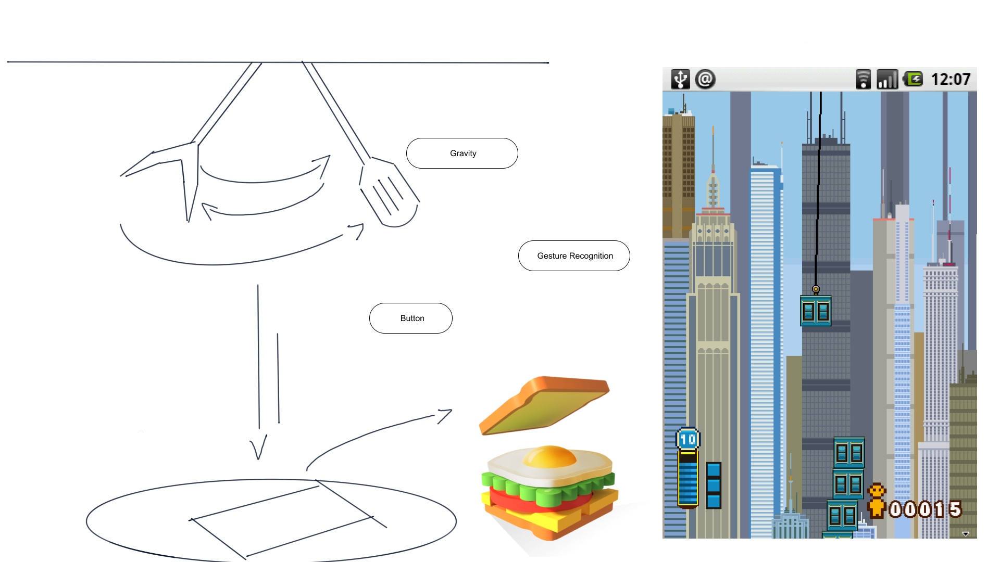
Blender
 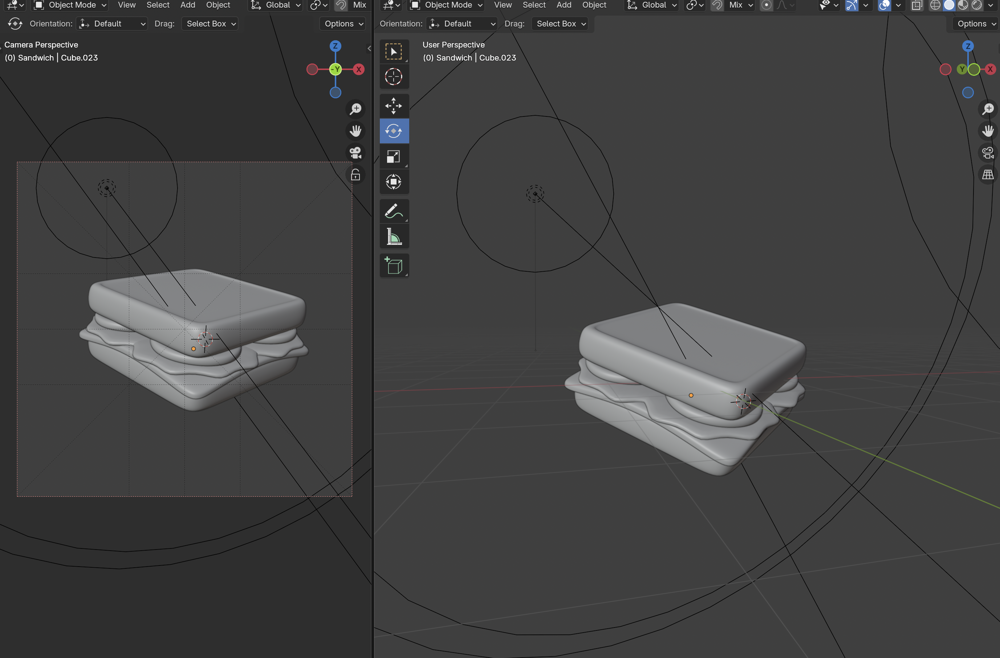
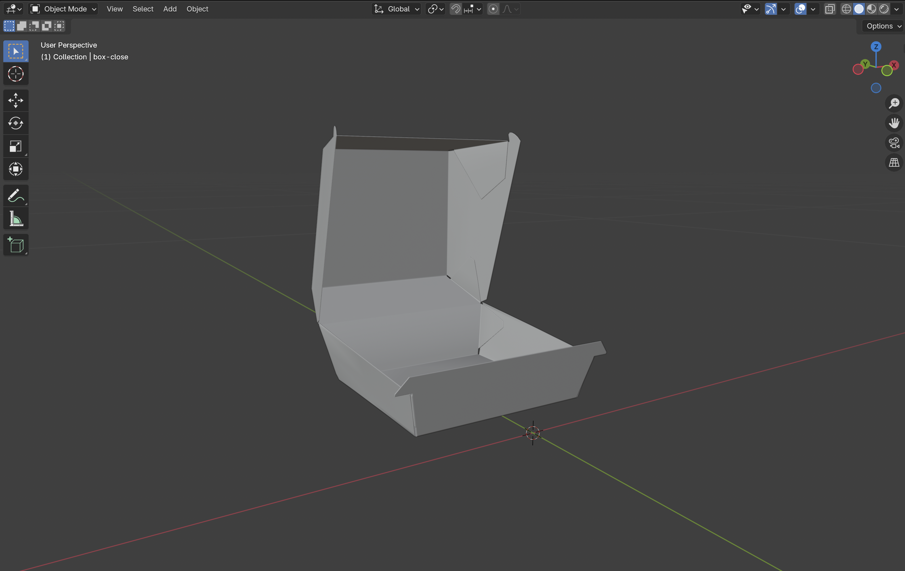
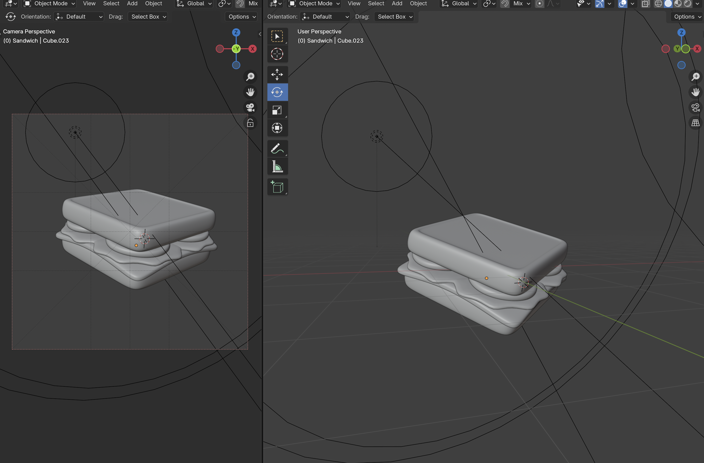
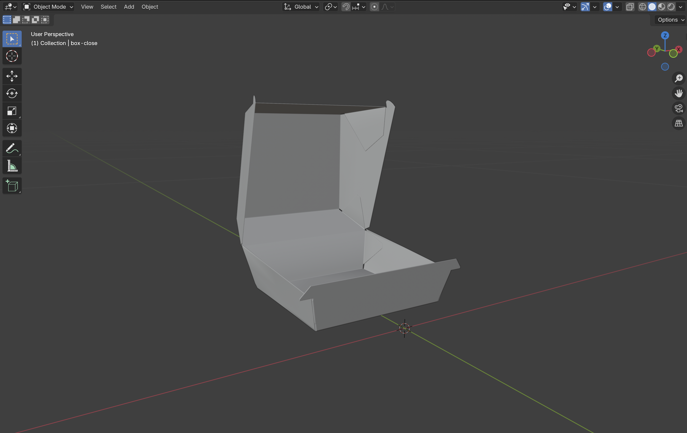
Unity
Step 1
First, add movement to the hook by attaching a HookMovement script.
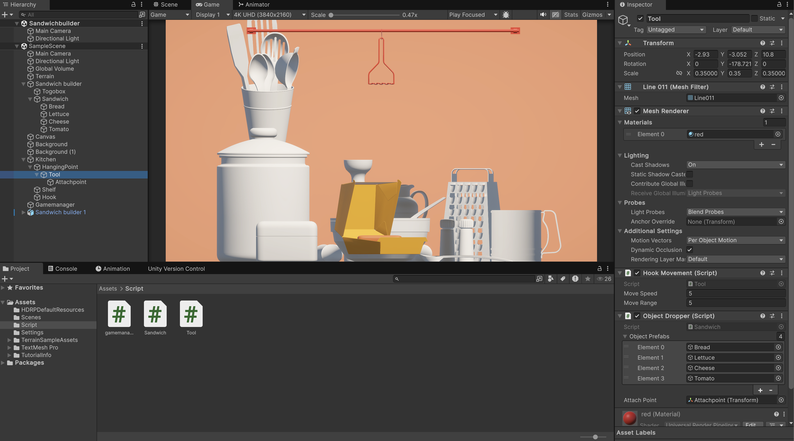 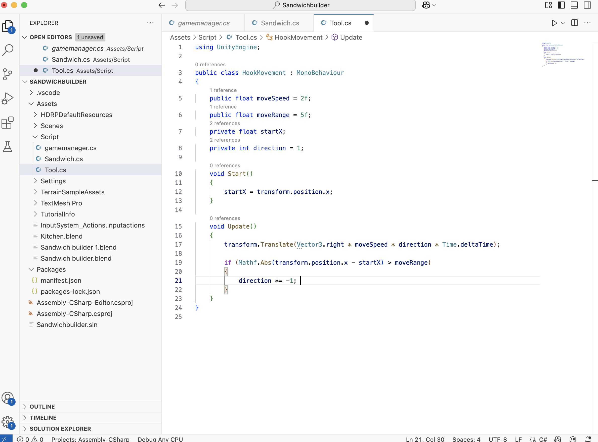Step 2
Add the ObjectDropper script, set Box Colliders on the hook and objects, and create object prefabs to randomly spawn different sandwich ingredients.
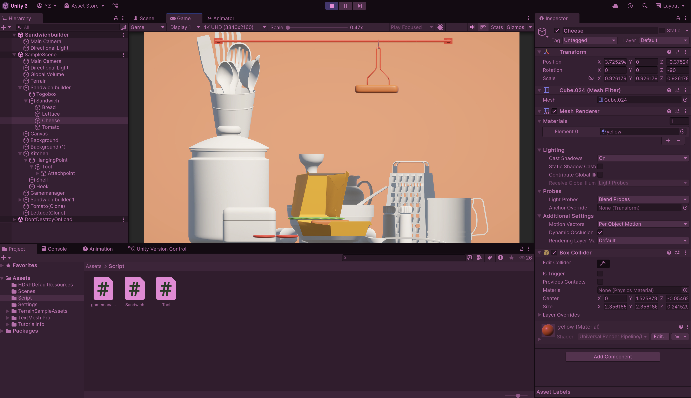 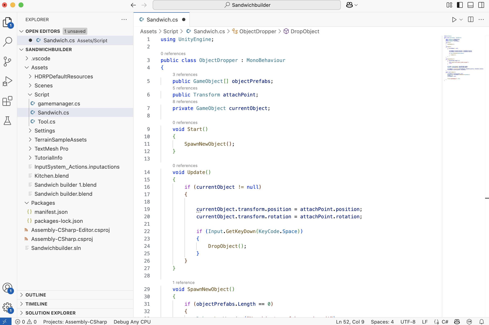Arduino
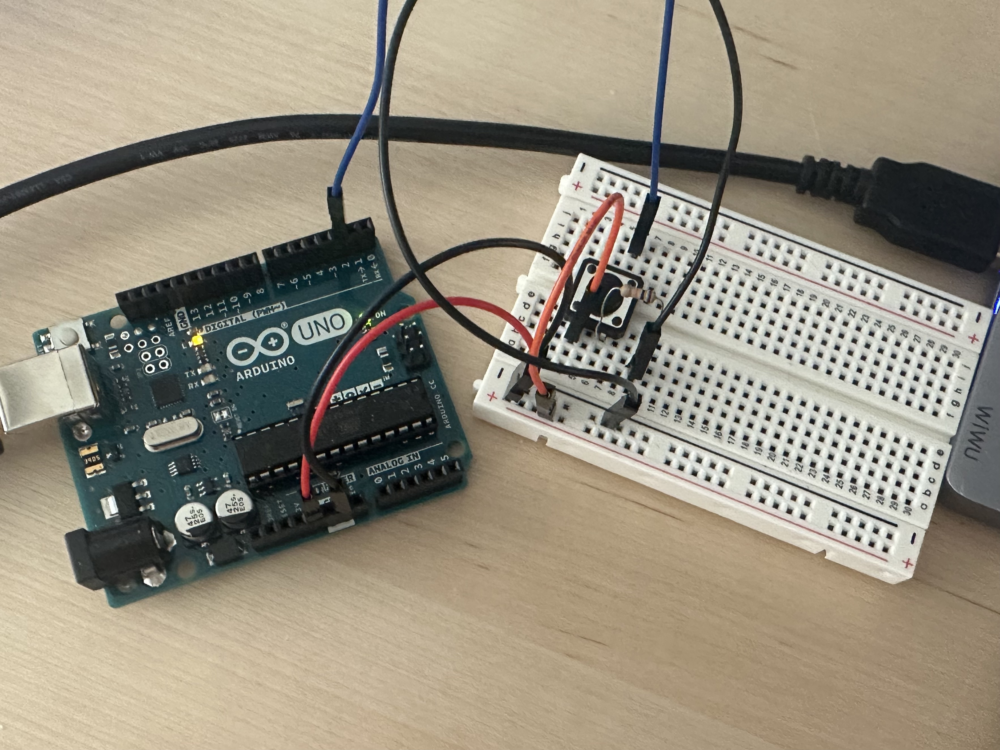 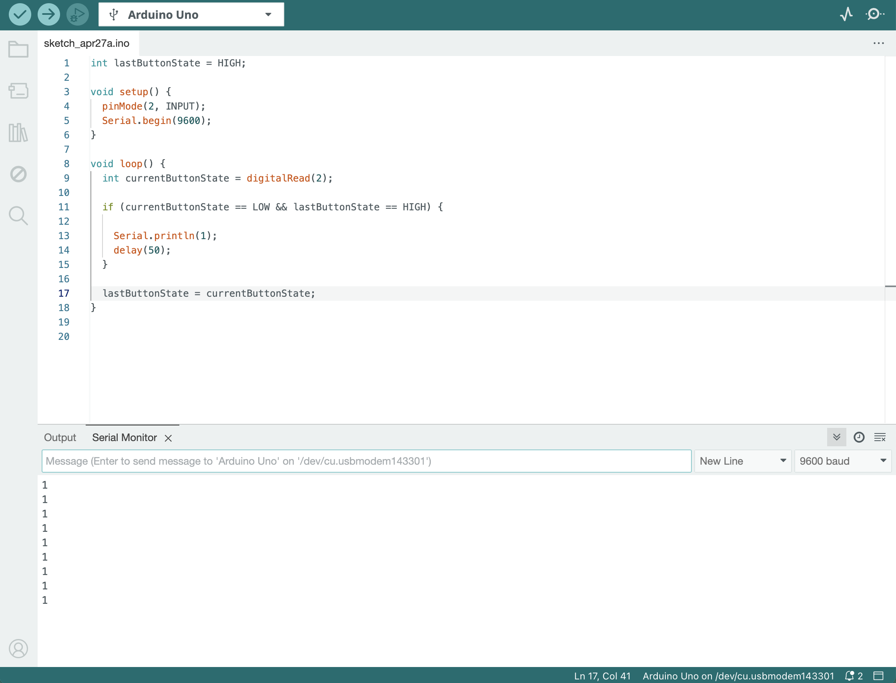
Outcome
I am having trouble connecting Unity and Arduino. I am not sure whether I should use SerialPort, Ardity, or another method to connect Arduino to objects in Unity.